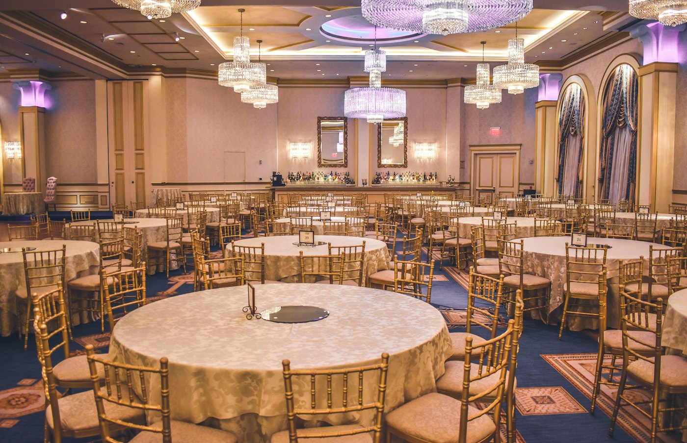
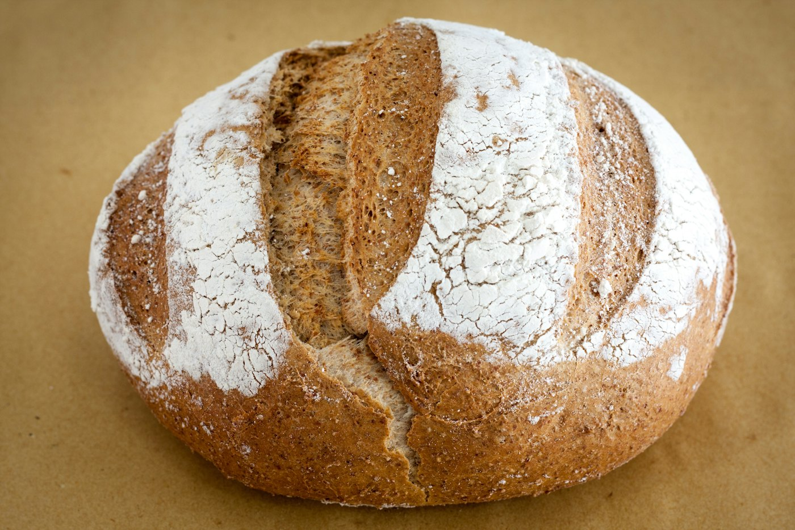
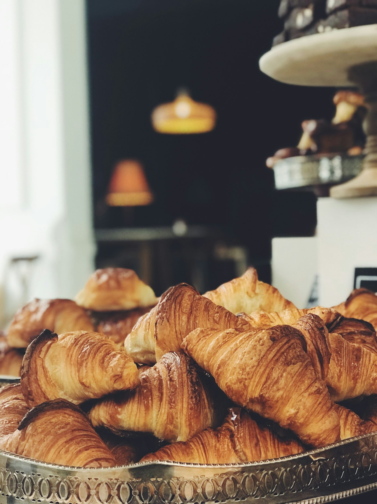
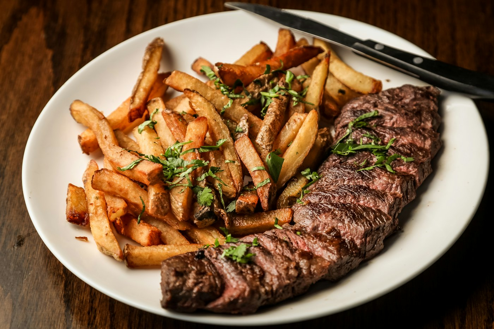
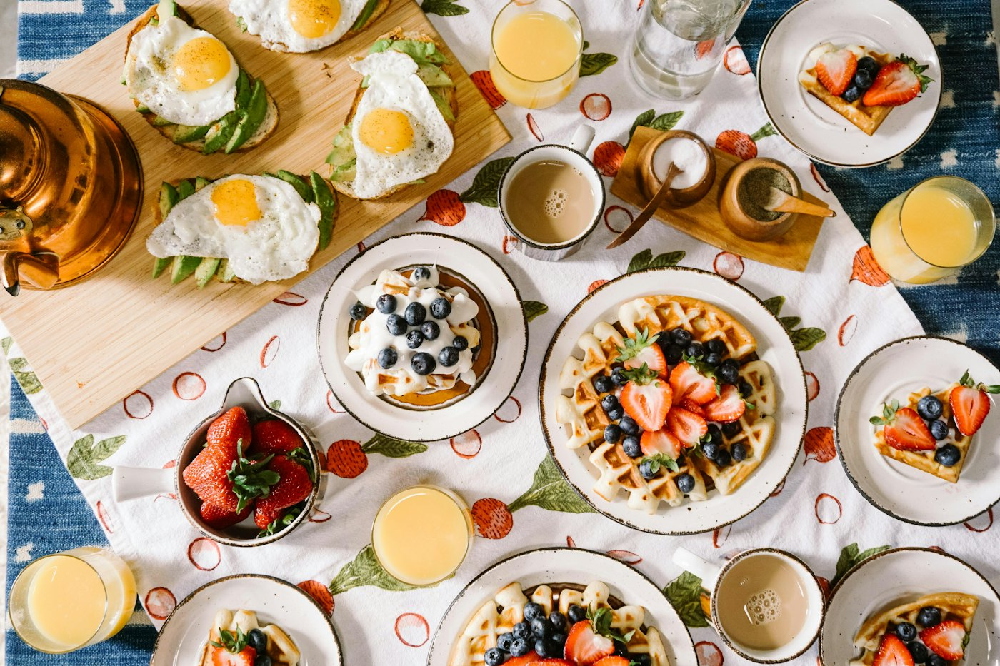
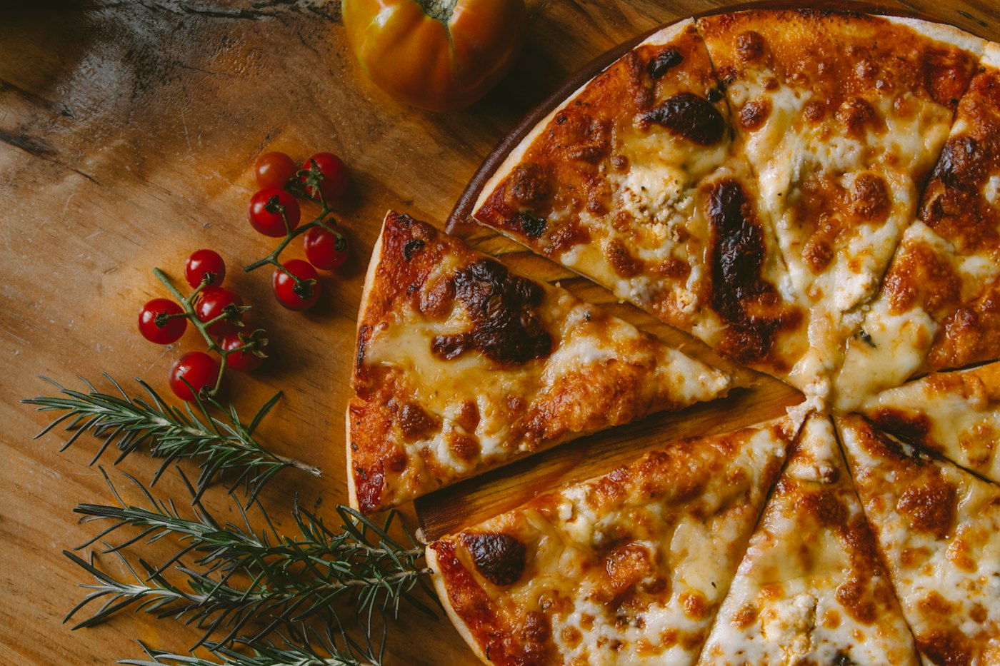
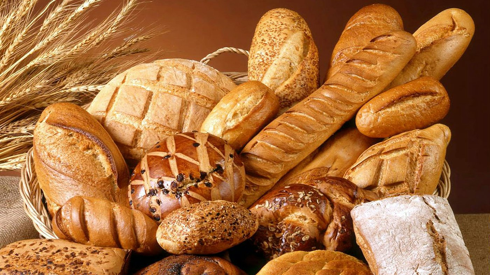
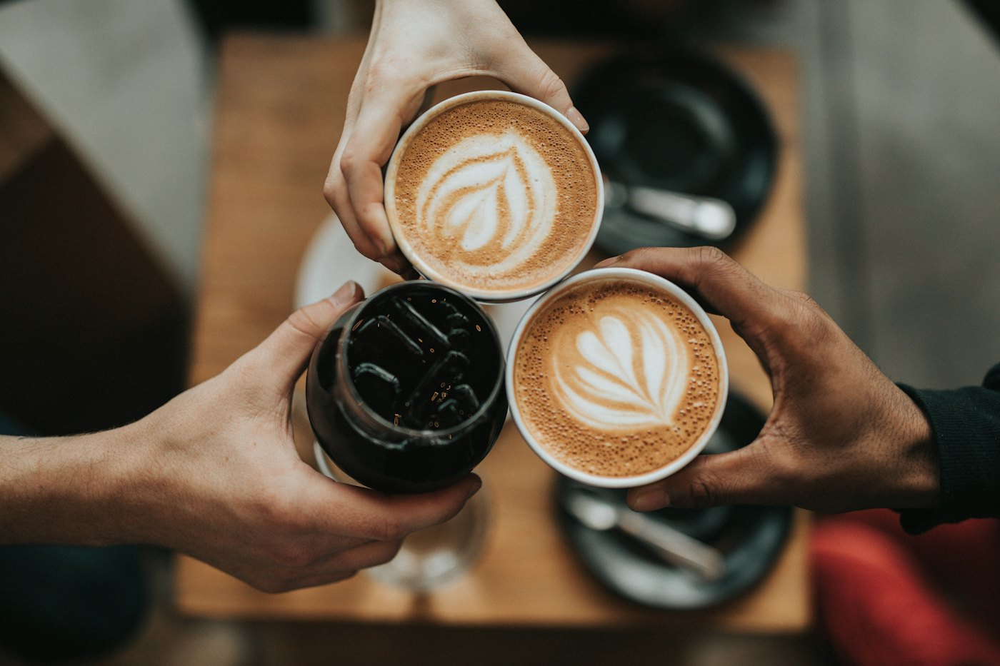
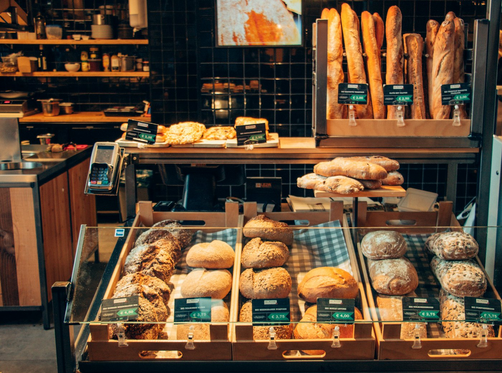
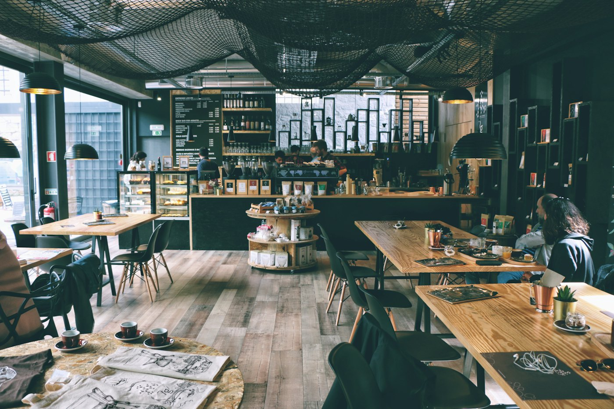

Térreo · acessívelEspazio Napoli
40sentados
60em pé
Layout flexível, acessibilidade e banheiros exclusivos. Para festas maiores e celebrações em família.
Croissant e café pela manhã, almoço executivo no meio do dia, brunch no fim de semana e, quando escurece, pizza romana com uma taça de vinho. Em Água Fria e na Casa Verde.
Todos os dias, das 8h às 22h


A casa muda ao longo do dia. Escolha um horário e veja o que está saindo do forno.

O croissant é o carro-chefe da manhã. Peça com um café e fique o tempo que quiser.

De segunda a sexta, das 12h às 15h. Prato feito com calma, servido rápido para quem volta ao trabalho.

Durante a semana, café da tarde. No fim de semana, brunch para reunir a família à mesa.

Quando escurece, a padaria vira lugar de jantar. Pizza em fatias, sopas e uma carta de vinhos.
Pães, folhados, pizza e pratos do balcão. O que está na vitrine muda ao longo do dia.



Croissants do dia:
Tradicional Queijo e presunto Chocolate CallebautPara fechar o dia sem pressa. Escolha o sabor da pizza romana e a casa serve a taça.
Válido de segunda a quarta, a partir das 19h, nas duas unidades.

Para o café da manhã sem pressa, uma reunião ou uma tarde inteira de trabalho.
Em Água Fria, na Zona Norte, com dois espaços privativos e buffet com cardápio exclusivo de comidas e bebidas.

Layout flexível, acessibilidade e banheiros exclusivos. Para festas maiores e celebrações em família.
Ambiente climatizado, com sacada e banheiros exclusivos. Pensado para comemorações íntimas.
A degustação e a visita ao espaço são feitas com hora marcada.